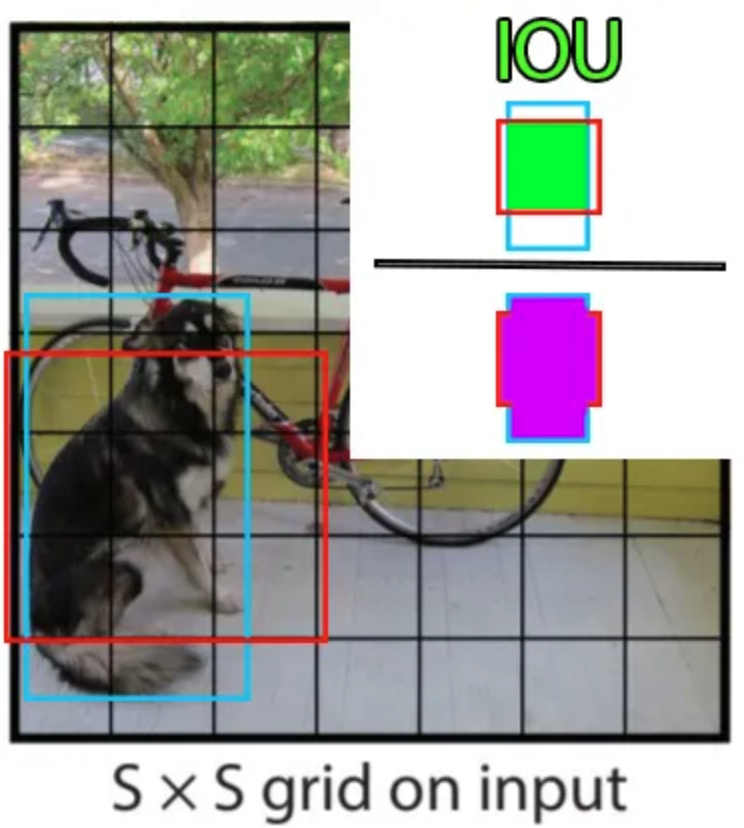

YOLO 详解#
此笔记本将详细探讨 YOLO 模型的工作原理。
目标检测#
目标检测的历史#
在深度学习的开创性论文 《ImageNet Classification with Deep Convolutional Neural Networks》 发表后不久，图像处理领域的研究人员开始开发深度学习模型。
如前一篇笔记本所述，图像处理算法主要分为三大类：分类、检测和分割。
使用深度学习模型进行图像分类相对简单，只要有足够的计算资源即可。然而，目标检测需要更多的创新。
2014 年，一组研究人员提出了论文 《Rich feature hierarchies for accurate object detection and semantic segmentation》，更为人熟知的名称为 R-CNN。这篇具有影响力的论文引入了一个两阶段的目标检测架构，并提供了显著的性能。该方法的主要缺点是处理速度过慢，无法实现实时检测。许多方法尝试通过不同的架构来解决这个问题，例如 fast R-CNN、faster R-CNN 和 mask R-CNN。这些方法大大改进了基础的 R-CNN，但在大多数情况下仍不足以实现实时检测。
2015 年，一篇论文在目标检测领域引发了重大变革。这篇论文是 《You Only Look Once: Unified, Real-Time Object Detection》。
You Only Look Once（YOLO）#
之前的方法使用区域建议后跟分类。换句话说，它们利用强大的分类器进行目标检测。
YOLO（You Only Look Once）论文提出通过一个单一的神经网络直接预测边界框和类别归属概率。这种架构更快，可以达到每秒处理 45 张图像的速度。
这是目标检测领域的一次革命！
那么，它是如何工作的呢？
YOLO：如何工作？#
这一部分将介绍 YOLO 架构，参考了 《YOLO Explained》 这篇博客文章。建议查看该文章。使用的图片来自博客文章或原始论文。
网格划分#
YOLO 的基本原理是将图像划分为更小的部分，使用一个 \(S \times S\) 的网格：
包含对象中心的单元格（例如狗或自行车）负责对象的检测（用于计算损失）。网格中的每个单元格预测 \(B\) 个边界框（可配置，原始论文中为 2）和每个框的置信分数。预测的边界框包含值 \(x, y, w, h, c\)，其中 \((x, y)\) 是网格中的中心位置，\( (w, h)\) 是边界框相对于整个图像的尺寸百分比，\( c\) 是模型的置信度（概率）。
在训练过程中计算边界框的精度（损失的组成部分）时，使用交并比（IoU），定义为：
\(\frac{pred_{box}\cap label_{box}}{pred_{box} \cup label_{box}}\)

除了预测边界框和置信度外，每个单元格还预测对象的类别。该类别在注释中由 one-hot 向量表示（仅包含 0，除了正确类别中的 1）。需要注意的是，每个单元格可以预测多个边界框，但只能预测一个类别。这是算法的一个局限性：如果同一单元格中有多个对象，模型将无法正确预测它们。
现在我们有了所有信息，可以计算网络的输出维度。我们有 \(S \times S\) 个单元格，每个单元格预测 \(B\) 个边界框和 \(C\) 个概率（\(C\) 为类别数）。
因此，模型的预测维度为：\(S \times S \times (C + B \times 5)\)。
这导致了以下图示：

顶部中间的图示显示了模型预测的边界框（线条更粗的边界框具有较高的置信分数）。底部中间的图示显示了每个单元格预测的类别（蓝色表示狗类，黄色表示自行车类，粉色表示汽车类）。
模型架构#
从层的排列方式来看，YOLO 模型的架构也很特殊。它包括三个主要组件：头部（head）、颈部（neck）和主干（backbone）。
主干（Backbone）：这是网络中最重要的部分，由一系列卷积层组成，用于检测最重要的特征。此部分通常在分类数据集上进行预训练。
颈部和头部（Neck and Head）：这些层处理卷积层的输出，以生成 \(S \times S \times (C + B \times 5)\) 大小的预测。
在 YOLO 原始论文中，网格大小为 7x7，有 20 个类别（Pascal VOC），每个单元格预测两个边界框。这导致预测大小为：
\(7 \times 7 \times (20 + 2 \times 5) = 1470\)
模型训练#
模型的训练参数（图像大小、epoch 数、层数、batch_size 等）在原始论文中有详细说明，我们这里不深入讨论。
然而，了解一下损失函数是很有趣的。基础的逻辑想法是简单地使用预测值与标签之间的 MSE 损失。然而，这样做不行，因为模型会对定位质量和预测精度给予相同的重要性。实际上，我们使用 \(\lambda_{coord}\) 和 \(\lambda_{noobj}\) 对损失进行加权。原始论文中 \(\lambda_{coord}\) 的值为 5，\(\lambda_{noobj}\) 的值为 0.5。需要注意的是，\(\lambda_{noobj}\) 仅用于没有对象的单元格，以避免其接近 0 的置信分数过多影响包含对象的单元格。
YOLO 的局限性#
我们已经提到其主要局限性：每个单元格只能预测有限数量的边界框，并且不能在同一单元格中检测不同类别的对象。例如，当想要在人群中检测人时，这会带来问题。
YOLO 的改进#
我们已经看到，YOLO 是一个在图像中检测对象时非常高效且快速的模型。因此，许多研究人员通过提出各种优化来改进它。即使到今天，YOLO 的新版本仍在不断推出。
这一部分将按时间顺序介绍 YOLO 的不同版本。
YOLOv2（2017）——也称为 YOLO9000#
论文：YOLO9000: Better, Faster, Stronger
创新点：
引入锚框（anchors）的概念，以提高边界框预测的精度。
将输入分辨率从 224x224 提高到 416x416，以提高小物体检测的性能。
YOLOv3（2018）#
论文：YOLOv3: An Incremental Improvement
创新点：
使用更深的模型，采用 Darknet-53 架构，这是一个残差卷积神经网络。
多尺度检测，在三个不同粒度级别（不同大小的特征图）上进行预测。
YOLOv4（2020）#
论文：YOLOv4: Optimal Speed and Accuracy of Object Detection
创新点：
使用 CSPDarknet53 主干以提高性能。
通过 PANet（路径聚合网络）改进检测头，以改善信息流。
引入马赛克数据增强（Mosaic Data Augmentation）的概念，以丰富训练数据的多样性。
添加各种现代技术，如 DropBlock、Mish 激活函数和 SPP（空间金字塔池化）。
YOLOv5（2020）#
由 Ultralytics 开发
创新点：
没有官方论文，但实现和性能方面有实用的改进。
模型更轻量，更容易训练，并具有更好的依赖项管理。
YOLOv6（2022）#
创新点：
新的 YOLOv6S 主干，优化用于实时性能。
先进的延迟降低技术。
在数据增强方法和超参数优化方面的改进。
YOLOv7（2022）#
论文：YOLOv7: Trainable bag-of-freebies sets new state-of-the-art for real-time object detectors
创新点：
集成免费技术包（bag of freebies）以提高精度，而不增加推理时间。
优化架构以实现速度和精度之间的最佳折衷。
添加各种正则化技术以提高整体性能。
YOLOv8（2023）#
由 Ultralytics 开发
创新点：
进一步优化用于实时性能和移动集成。
灵活的架构，允许根据各种用例调整，包括检测、分割和分类。
YOLO-World（2024）#
论文：YOLO-World: Real-Time Open-Vocabulary Object Detection
创新点：
使用文本的 transformer encoder 以实现开放词汇检测。